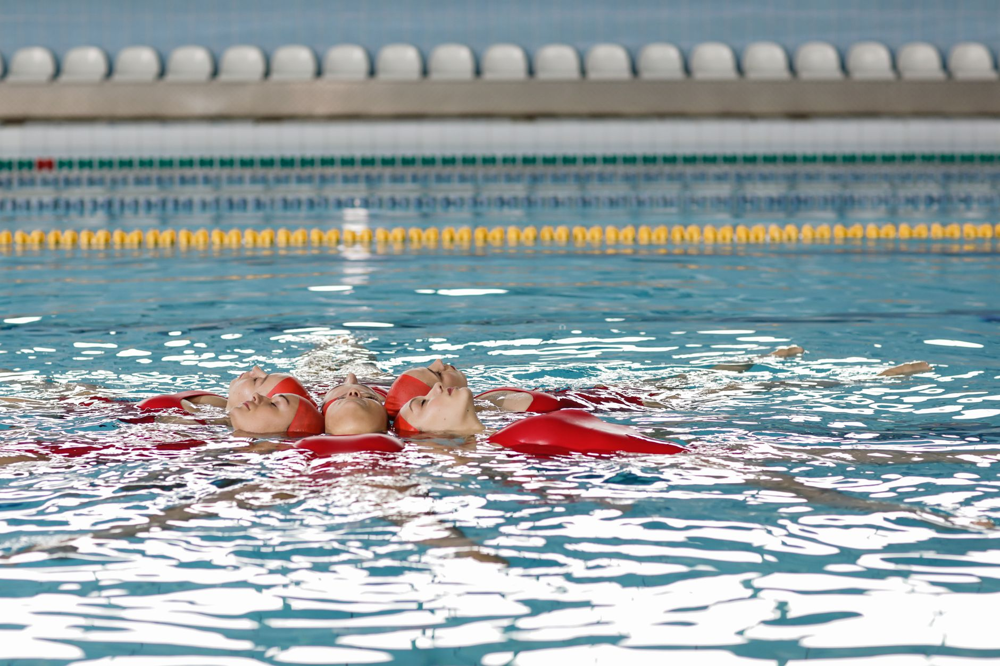

Water Polo Steps Into the National Spotlight
Big news for water polo fans across the country: USA Water Polo has announced that the 2025 NCAA Men's Water Polo Championship will be presented live on ESPNU. For a sport that has long thrived in pools and club circuits without always receiving the mainstream attention it deserves, this is a meaningful moment. And for young athletes right here in the Tampa Bay area — including players in Wesley Chapel and Land O' Lakes — it is the kind of opportunity that can change how they see their own future in the water.
Why Visibility Matters for Youth Athletes
When a sport earns live national television coverage, something important happens beyond the broadcast itself. Young players get to watch elite athletes compete at the highest level, see what years of training and commitment look like in action, and begin to imagine themselves on that same path. Research consistently shows that seeing role models who share your sport — and your journey — plays a powerful role in keeping young athletes motivated and engaged.
Water polo is a uniquely demanding sport. It requires exceptional swimming fitness, sharp tactical thinking, strong teamwork, and mental toughness under pressure. Watching NCAA-level players demonstrate all of these qualities in real time is one of the most effective ways to help youth players understand what excellence in the sport truly looks like.
How to Make the Most of Watching with Your Young Athlete
Tuning into the NCAA Championship is a great family activity, but it can also be an educational one. Here are a few ways to engage your young player during the broadcast:
- Talk through positioning: Notice how players move without the ball. Where do they create space? How do they support their teammates?
- Watch the goalkeepers: Goalkeeping at the college level is an art form. Pay attention to how they read the shooter and control the goal box.
- Observe the conditioning: College players swim hard for the entire game. Use this as a conversation about the importance of building a strong aerobic base through consistent training.
- Discuss decision-making: Ask your young athlete what they would do in a given situation. This kind of active viewing builds game IQ over time.
The Path From Youth Aquatics to College Competition
For many families in the Wesley Chapel and Land O' Lakes communities, the question of college athletics is very much on the horizon. Water polo is a sport with genuine opportunities at the collegiate level, and young athletes who begin building their skills early — and who train with intention — give themselves the best possible chance at earning a roster spot in the future.
At Nexar Aquatic Academy, we believe that every hour spent in the water is an investment. Whether a player is just learning the fundamentals or is already competing at a high club level, the habits and skills built in youth will carry them further than they might expect. Exposure to elite competition, even through a television screen, is part of building that long-term vision.
Let This Moment Fuel the Journey
The 2025 NCAA Men's Water Polo Championship on ESPNU is more than a sports broadcast — it is a reminder that this sport has a thriving, competitive future, and that young athletes playing in Tampa Bay pools today are part of that story. At Nexar Aquatic Academy, we are proud to support players at every stage of that journey, from their first lap to their biggest goals.
Gather the family, find ESPNU, and let the championship inspire what comes next in the water.
Ready to get in the water?
First practice is completely FREE — no commitment needed.